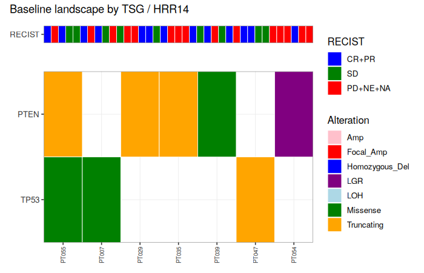
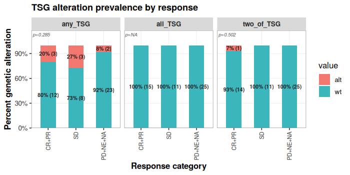

2026-08-05
This vignette walks through every user-facing function in
ctdnaTM, grouped by workflow stage. Every function is
invoked at least once; every argument that has a non-default meaning is
exercised. The mock study built by ctdna_make_mock_study()
is used throughout so the whole document runs end-to-end without
external data.
library(ctdnaTM)
sim <- ctdna_make_mock_study(n_patients = 60, seed = 3)ctdna_make_mock_study() returns a list with the same
shape as a real Guardant Health Infinity delivery —
infinity_report (variants), optional panel frames, and a
simple clinical ADaM frame.
ctdna_prepare()Assembles a ctdna_prep object from an Infinity report
plus any ADaM frames. In v0.73+, ctdna_prepare() no longer
runs sample QC by default — prep$variants comes back
raw.
prep <- ctdna_prepare(
infinity_report = sim$infinity_report,
adam = list(adsl = sim$clinical),
verbose = FALSE)
class(prep)
#> [1] "ctdna_prep"
names(prep)
#> [1] "samples" "variants" "clinical" "assessments" "dictionary"
nrow(prep$variants) # raw variants (pre-QC)
#> [1] 591ctdna_sample_qc()Runs sample-level QC on prep$samples, drops failing
samples, and cascades to prep$variants (variants of dropped
samples are removed). Idempotent — calling it a second time drops
nothing new.
prep <- ctdna_sample_qc(prep, verbose = FALSE)
nrow(prep$variants) # after QC
#> [1] 541
prep <- ctdna_sample_qc(prep, verbose = FALSE)
nrow(prep$variants) # unchanged on rerun
#> [1] 541Every filter scheme is built from four combinators plus a library of predicates:
rule(Column = value) — atomic predicate.
value can be a scalar, vector, or
list(op = "!=", value = ...) for operators
(==, !=, <,
<=, >, >=,
%in%, and ==col for column-to-column
comparisons).allOf(a, b, ...) — AND.anyOf(a, b, ...) — OR.not(x) — NOT.Predicate helpers such as rule_somatic(),
rule_truncating(), rule_clinvar_path() are
shortcuts for common atomic rules.
# Atomic + AND + OR + NOT
r <- allOf(
rule(Gene = c("TP53","KRAS")),
not(rule_synonymous()),
anyOf(rule_somatic(), rule_germline()))
class(r)
#> [1] "ctdna_rule_combinator" "ctdna_rule"ctdnaTM ships four biomarker schemes plus a permissive
fallback, keyed by name:
TSG_Tier1() — most permissive TSG (TP53/RB1/PTEN). Any
impactful somatic short variant, fusion, or deleterious LGR.TSG_Tier2() — intermediate TSG (TP53/RB1/PTEN). Somatic
LoF, ClinVar-P/LP missense/inframe, LOH or homozygous deletion, or
somatic deleterious intra-chromosomal LGR.TSG_Tier3() — most restrictive TSG (TP53/RB1/PTEN).
Germline P/LP, somatic LoF, somatic ClinVar-P/LP + missense/inframe, LOH
or homozygous deletion. No LGR, no fusion, no rare-P/LP-synonymous
carve-in.HRR14() — HRR biomarker on 14 HRR genes. ClinVar P/LP,
truncating + rare + not-BRCA2-K3326X, homozygous deletion, or somatic
deleterious intra-genic LGR.scheme_basic() — GH Infinity “impactful alterations”
ruleset applied to all genes.All four biomarker schemes drop ClinVar benign and CHIP
unconditionally. Each scheme’s body is broken into named
branches so the filtering_criteria column tells
you which branch fired
(e.g. PASS::TSG_Tier1(somatic_nonsyn) rather than just
PASS::TSG_Tier1).
visualized_scheme(TSG_Tier1(), width = 76)
#> TSG_Tier1 (category: gene_set)
#> TSG Tier 1 (most permissive) on TP53/RB1/PTEN. Drops ClinVar benign and
#> CHIP. Passes: germline P/LP, OR somatic non-synonymous, OR somatic
#> LOH/homozygous deletion, OR somatic deleterious LGR (any subtype), OR
#> somatic fusion.
#>
#> REQUIRE (gates -- if any fail -> DROP):
#> |- Gene in {TP53, RB1, PTEN}
#> |- NOT (ClinVar in {Benign, Likely_benign, Benign/Likely_benign})
#> `- NOT (Somatic_status = somatic_putative_ch)
#>
#> KEEP if ANY of these paths succeeds:
#>
#> PATH A -- Somatic_status + ClinVar
#> |- Somatic_status = germline
#> `- ClinVar in {Pathogenic, Likely_pathogenic, Pathogenic/Likely_pathogenic, Pathogenic/Likely_pathogenic,_other, Likely_pathogenic,_other, Likely_pathogenic,_risk_factor}
#>
#> PATH B -- Somatic_status + Molecular_consequence
#> |- Somatic_status = somatic
#> `- (Molecular_consequence in {missense, inframe_indel, inframe_insertion, inframe_deletion, inframe_duplication, nonsense, frameshift, stop_lost, start_lost, splice_acceptor, splice_donor} OR Molecular_consequence = synonymous AND ClinVar in {Pathogenic, Likely_pathogenic, Pathogenic/Likely_pathogenic, Pathogenic/Likely_pathogenic,_other, Likely_pathogenic,_other, Likely_pathogenic,_risk_factor} AND gnomAD_AF < 0.01)
#>
#> PATH C -- Somatic_status + CNV_type
#> |- Somatic_status = somatic
#> `- CNV_type in {loh_deletion, homozygous_deletion}
#>
#> PATH D -- Somatic_status + Variant_type + Functional_impact
#> |- Somatic_status = somatic
#> |- Variant_type = LGR
#> `- Functional_impact = deleterious
#>
#> PATH E -- Somatic_status + Variant_type
#> |- Somatic_status = somatic
#> `- Variant_type = Fusion
#>
#> Otherwise -> DROP.visualized_scheme(HRR14(), width = 76)
#> HRR14 (category: gene_set)
#> HRR biomarker on the 14 HRR genes. Drops ClinVar benign and CHIP. Passes:
#> germline or somatic ClinVar P/LP, OR truncating + rare(<1%)
#> not-BRCA2-K3326X, OR somatic deleterious intra-genic LGR (deletion,
#> tandem-duplication, inversion; Gene == Fusion_gene_b), OR homozygous
#> deletion.
#>
#> REQUIRE (gates -- if any fail -> DROP):
#> |- Gene in {BRCA1, BRCA2, ATM, BARD1, BRIP1, CDK12, CHEK1, CHEK2, FANCL, PALB2, RAD51B, RAD51C, RAD51D, RAD54L}
#> |- NOT (ClinVar in {Benign, Likely_benign, Benign/Likely_benign})
#> `- NOT (Somatic_status = somatic_putative_ch)
#>
#> KEEP if ANY of these paths succeeds:
#>
#> PATH A -- ClinVar
#> `- ClinVar in {Pathogenic, Likely_pathogenic, Pathogenic/Likely_pathogenic, Pathogenic/Likely_pathogenic,_other, Likely_pathogenic,_other, Likely_pathogenic,_risk_factor}
#>
#> PATH B -- Molecular_consequence + gnomAD_AF + not Gene + Mut_aa
#> |- Molecular_consequence in {frameshift, nonsense, start_lost, stop_lost, splice_acceptor, splice_donor}
#> |- gnomAD_AF < 0.01
#> `- NOT (Gene = BRCA2 AND Mut_aa in {p.K3326*, K3326*, p.Lys3326*})
#>
#> PATH C -- Somatic_status + Variant_type + Functional_impact + Variant_type + Direction_a + Direction_b + Gene
#> |- Somatic_status = somatic
#> |- Variant_type = LGR
#> |- Functional_impact = deleterious
#> |- (Variant_type = LGR AND Direction_a = -1 AND Direction_b = 1 OR Variant_type = LGR AND Direction_a = 1 AND Direction_b = -1 OR Variant_type = LGR AND (Direction_a = 1 AND Direction_b = 1 OR Direction_a = -1 AND Direction_b = -1))
#> `- Gene ==col Fusion_gene_b
#>
#> PATH D -- Variant_type + CNV_type
#> |- Variant_type = CNV
#> `- CNV_type = homozygous_deletion
#>
#> Otherwise -> DROP.ctdna_variant_filter()The single entry point for variant filtering. Two mandatory flags decide what happens:
apply |
explain |
effect |
|---|---|---|
TRUE |
TRUE |
prep$variants filtered;
annotated snapshot at
prep$filter_explanation$<sig> |
TRUE |
FALSE |
prep$variants filtered; no
snapshot |
FALSE |
TRUE |
prep$variants unchanged;
snapshot only |
FALSE |
FALSE |
error (nothing to do) |
Live prep$variants never carries the
filtering_criteria column; that column lives only on the
annotated snapshot.
# Apply and explain in one call
prep2 <- ctdna_variant_filter(prep, "TSG_Tier1",
apply = TRUE, explain = TRUE, verbose = FALSE)
nrow(prep2$variants) # filtered
#> [1] 34
nrow(prep2$filter_explanation$TSG_Tier1) # all rows, annotated
#> [1] 541
table(prep2$filter_explanation$TSG_Tier1$filtering_criteria, useNA = "always")
#>
#> FAIL::TSG_Tier1 PASS::TSG_Tier1(LOH_or_homozyg_del)
#> 18 2
#> PASS::TSG_Tier1(deleterious_LGR) PASS::TSG_Tier1(fusion)
#> 4 2
#> PASS::TSG_Tier1(germline_PLP) PASS::TSG_Tier1(somatic_nonsyn)
#> 2 24
#> <NA>
#> 489Combining schemes — pass a vector of names or a list of schemes. Row passes if any in-scope scheme passes; the criteria column names every in-scope scheme that fired and, for schemes with named branches, which branch fired.
prep3 <- ctdna_variant_filter(prep,
filter_scheme = c("TSG_Tier1","TSG_Tier2","HRR14"),
apply = TRUE, explain = TRUE, verbose = FALSE)
names(prep3$filter_explanation) # snapshot key = "TSG_Tier1_TSG_Tier2_HRR14"
#> [1] "TSG_Tier1_TSG_Tier2_HRR14"
head(sort(table(prep3$filter_explanation[[1]]$filtering_criteria,
useNA = "ifany"), decreasing = TRUE), 6)
#>
#> <NA>
#> 489
#> FAIL::TSG_Tier1, TSG_Tier2
#> 18
#> PASS::TSG_Tier1(somatic_nonsyn), TSG_Tier2(somatic_LoF)
#> 14
#> PASS::TSG_Tier1(somatic_nonsyn)
#> 7
#> PASS::TSG_Tier1(deleterious_LGR)
#> 4
#> PASS::TSG_Tier1(somatic_nonsyn), TSG_Tier2(somatic_PLP_missense)
#> 3
# Typical labels:
# PASS::TSG_Tier1(somatic_nonsyn), TSG_Tier2(somatic_LoF)
# PASS::TSG_Tier1(deleterious_LGR)
# FAIL::TSG_Tier1, TSG_Tier2
# NA (row in no scheme's scope)ctdna_create_scheme()Thin builder for user schemes. Covers the flat AND/OR case with
positive predicates. For anything more complex (negation, nesting) use
create_filtering_scheme() with the full grammar.
my <- ctdna_create_scheme(
name = "mini_tsg",
genes = c("TP53","RB1"),
criteria = c("somatic","truncating"),
combine = "all",
overwrite = TRUE)
prep4 <- ctdna_variant_filter(prep, "mini_tsg",
apply = TRUE, explain = FALSE, verbose = FALSE)
nrow(prep4$variants)
#> [1] 6create_filtering_scheme() — the full grammarFor schemes that need negation or nested logic. This is the low-level
builder; ctdna_create_scheme() and every built-in scheme
are wrappers around it.
sch <- create_filtering_scheme(
rule(Gene = c("TP53","RB1","PTEN")),
not(rule_clinvar_benign()),
not(rule_ch()),
anyOf(
allOf(rule_germline(), rule_clinvar_path()),
allOf(rule_somatic(),
anyOf(rule_truncating(),
allOf(rule_missense(), rule_rare_001())))),
name = "custom_tsg",
description = "TSG: germline P/LP OR somatic LoF OR somatic rare missense.",
overwrite = TRUE)
class(sch)
#> [1] "ctdna_filtering_scheme" "ctdna_rule"head(ctdna_filter_schemes_list(), 10)
#> name category indication n_genes variant_type
#> 1 NSCLC indication_gene_set NSCLC 25 <NA>
#> 2 HNSCC indication_gene_set HNSCC 21 <NA>
#> 3 SCLC indication_gene_set SCLC 15 <NA>
#> 4 BRCA indication_gene_set BRCA 20 <NA>
#> 5 CRC indication_gene_set CRC 21 <NA>
#> 6 mCRPC indication_gene_set mCRPC 16 <NA>
#> 7 GBM indication_gene_set GBM 19 <NA>
#> 8 HRR gene_set_only <NA> 28 <NA>
#> 9 TSGs gene_set_only <NA> 25 <NA>
#> 10 RTK gene_set_only <NA> 27 <NA>
#> description
#> 1 Non-small cell lung cancer (NSCLC) - recurrent drivers.
#> 2 Head and neck squamous cell carcinoma - recurrent drivers.
#> 3 Small cell lung cancer - recurrent drivers.
#> 4 Breast cancer - recurrent drivers.
#> 5 Colorectal cancer - recurrent drivers.
#> 6 Metastatic castration-resistant prostate cancer - recurrent drivers.
#> 7 Glioblastoma - recurrent drivers.
#> 8 Homologous recombination repair (HRR) pathway genes.
#> 9 Common tumor suppressor genes (TSGs).
#> 10 Receptor tyrosine kinases (RTK) / MAPK pathway.
ctdna_filter_scheme_show("HRR14", print = FALSE)$name
#> Error in ctdna_filter_scheme_show("HRR14", print = FALSE): unused argument (print = FALSE)Persistence — save a scheme to disk and reload it in a later session:
ctdna_filter_scheme_save(sch, file = "custom_tsg.rds")
sch2 <- ctdna_filter_scheme_load("custom_tsg.rds")ctdna_oncoprint()Takes a prep, a named list of gene sets, and returns an
oncoprint (ComplexHeatmap engine if installed, ggplot fallback
otherwise). Baseline visit by default.
# Add an Indication column so wrap works
prep$adrs <- data.frame(
Patient_ID = prep$clinical$Patient_ID,
indication = rep(c("NSCLC","HNSCC","SCLC","mCRPC"),
length.out = nrow(prep$clinical)))
op <- ctdna_oncoprint(prep,
gene_sets = list(TSG = c("TP53","RB1","PTEN"),
HRR14 = ctdna_gene_set("HRR14")),
filter_scheme = "TSG_Tier1",
engine = "ggplot",
title = "Baseline landscape by TSG / HRR14")
op$plot
ctdna_alteration_grid()Alteration prevalence grid. Rows are gene sets, columns are the RECIST-derived response strata.
Gene-set entries can be bare vectors (default: any-of) or wrapped
with alt_any(), alt_all(), or
alt_any_n(n) to change how multi-gene sets combine.
gr <- ctdna_alteration_grid(prep,
gene_sets = list(
any_TSG = c("TP53","RB1","PTEN"),
all_TSG = alt_all(c("TP53","RB1","PTEN")),
two_of_TSG = alt_any_n(c("TP53","RB1","PTEN"), n = 2)),
scheme = "three",
title = "TSG alteration prevalence by response")
gr$plot
ctdna_pipeline() runs every deliverable step whose input
modalities are present. Result access is uniform:
res$<key>$plot. A dry run reports what would
execute.
dry <- ctdna_pipeline(prep, dry_run = TRUE, verbose = FALSE)
str(dry$skipped, max.level = 1)
#> List of 2
#> $ vs_ihc : chr "needs prep$ihc (not found in prep)."
#> $ vs_expression: chr "needs prep$rnaseq (not found in prep)."res <- ctdna_pipeline(prep,
which = c("oncoprint","alteration_grid"),
scheme = "three",
gene_sets = list(TSG = c("TP53","RB1","PTEN"),
HRR14 = ctdna_gene_set("HRR14")),
engine = "ggplot",
verbose = FALSE)
names(res)
#> [1] "plots" "failures" "skipped" "timing"
#> [5] "oncoprint" "alteration_grid"The rule library exports around 60 predicate helpers. The most common ones:
rule_somatic(),
rule_germline(), rule_ch()rule_clinvar_path(),
rule_clinvar_benign(), rule_clinvar_vus()rule_truncating(),
rule_missense(), rule_synonymous(),
rule_nonsense(), rule_frameshift(),
rule_inframe_indel(), rule_splice_acceptor(),
rule_splice_donor()rule_is_SNV(),
rule_is_Indel(), rule_is_CNV(),
rule_is_Fusion(), rule_is_LGR()rule_cnv_homozyg_del(),
rule_cnv_loh_del(), rule_cnv_focal_amp(),
rule_cnv_aneuploid_amp()rule_lgr_deletion(),
rule_lgr_tandem_duplication(),
rule_lgr_inversion(),
rule_is_LGR_deleterious()rule_rare_001(),
rule_rare_0001(), rule_common_001()rule_genes_HRR14(),
rule_genes_TSG(), rule_genes_RTK(),
rule_genes_MMR()rule_ind_NSCLC(),
rule_ind_BRCA(), rule_ind_SCLC(),
rule_ind_HNSCC(), rule_ind_CRC(),
rule_ind_mCRPC(), rule_ind_GBM()See ?ctdna_rules_library for the complete list.
ctdna_opts("subject") # column name for patient ID
#> [1] "Patient_ID"
ctdna_opts("gene") # column name for gene symbol
#> [1] "Gene"Options are set with ctdna_opts(key = value, ...) and
can be persisted with ctdna_opts_save() /
ctdna_opts_load().
sessionInfo()
#> R version 4.3.3 (2024-02-29)
#> Platform: x86_64-pc-linux-gnu (64-bit)
#> Running under: Ubuntu 24.04.4 LTS
#>
#> Matrix products: default
#> BLAS: /usr/lib/x86_64-linux-gnu/blas/libblas.so.3.12.0
#> LAPACK: /usr/lib/x86_64-linux-gnu/lapack/liblapack.so.3.12.0
#>
#> locale:
#> [1] C
#>
#> time zone: Etc/UTC
#> tzcode source: system (glibc)
#>
#> attached base packages:
#> [1] stats graphics grDevices utils datasets methods base
#>
#> other attached packages:
#> [1] knitr_1.45 ctdnaTM_0.77.0
#>
#> loaded via a namespace (and not attached):
#> [1] vctrs_0.6.5 patchwork_1.2.0 cli_3.6.2 rlang_1.1.3
#> [5] xfun_0.41 highr_0.10 generics_0.1.3 labeling_0.4.3
#> [9] glue_1.7.0 colorspace_2.1-0 scales_1.3.0 fansi_1.0.5
#> [13] grid_4.3.3 munsell_0.5.0 evaluate_0.23 tibble_3.2.1
#> [17] lifecycle_1.0.4 compiler_4.3.3 dplyr_1.1.4 pkgconfig_2.0.3
#> [21] farver_2.1.1 R6_2.5.1 tidyselect_1.2.0 utf8_1.2.4
#> [25] pillar_1.9.0 magrittr_2.0.3 tools_4.3.3 withr_2.5.0
#> [29] gtable_0.3.4 ggnewscale_0.4.10 ggplot2_3.4.4